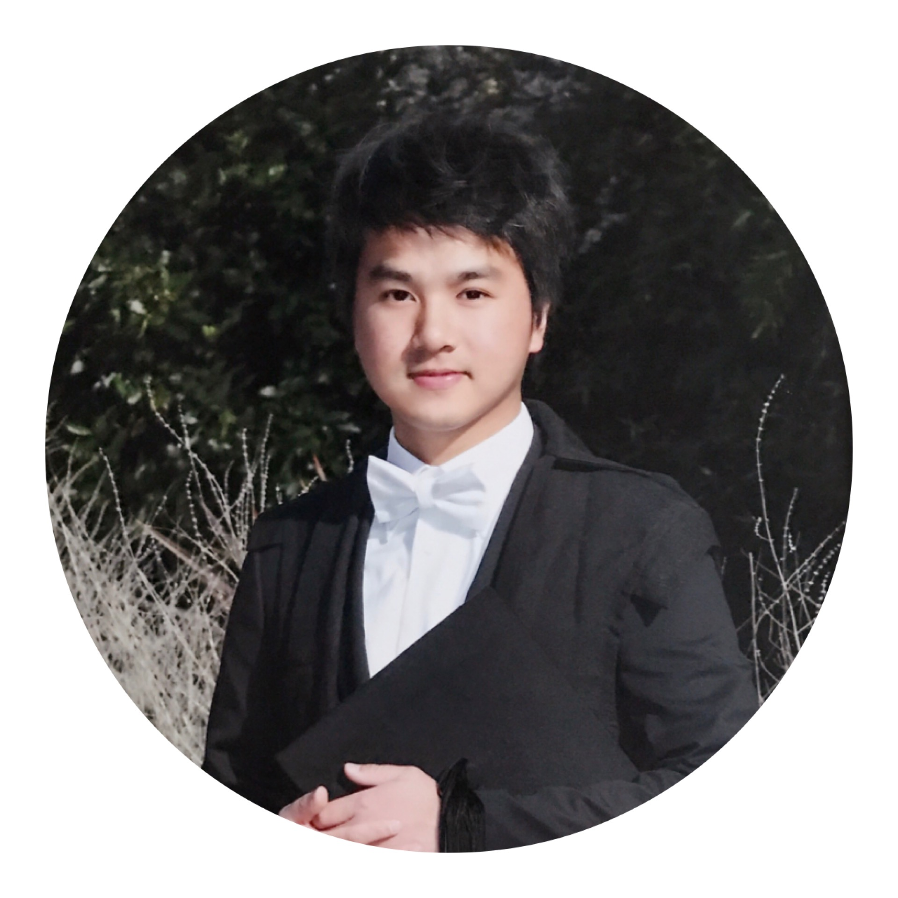

Hey, I'm Neo.
Mixing of multi-lingual, technical and business analytical backgrounds with a variety of experiences in practical software development and product management, Neo has been aiming at enriching his technological landscapes to be an international IT professional focusing on web application and blockchain software development, with strengthening technical capabilities of improving process and product development through applying technological solutions and innovative strategies. Neo is a native speaker of English, Mandarin and Cantonese with conversational Japanese.
My Focused Areas
Blockchain Technologies
Mixing of multi-lingual, technical and business analytical backgrounds with a variety of experiences in practical software development and product management, Neo has been aiming at enriching his technological landscapes to be an international IT professional
Web Development
Mixing of multi-lingual, technical and business analytical backgrounds with a variety of experiences in practical software development and product management, Neo has been aiming at enriching his technological landscapes to be an international IT professional
Product Development
Mixing of multi-lingual, technical and business analytical backgrounds with a variety of experiences in practical software development and product management, Neo has been aiming at enriching his technological landscapes to be an international IT professional
UI/UX Responsive Design
Mixing of multi-lingual, technical and business analytical backgrounds with a variety of experiences in practical software development and product management, Neo has been aiming at enriching his technological landscapes to be an international IT professional
My Skills
Development
- JavaScript
- HTML5
- CSS3
- Jekyll
- Python
- React
- Backbone
- Node.js
- Angular
My Educations
University of Oxford
Oct 2017 - Jun 2018
MSc in Software Engineering
Mixing of multi-lingual, technical and business analytical backgrounds with a variety of educations in practical software development and product management, Neo has been aiming at enriching his technological Oxford, United KingdomUniversity of Oxford
Oct 2017 - Jun 2018
MSc in Software Engineering
Mixing of multi-lingual, technical and business analytical backgrounds with a variety of educations in practical software development and product management, Neo has been aiming at enriching his technological Oxford, United KingdomUniversity of Oxford
Oct 2017 - Jun 2018
MSc in Software Engineering
Mixing of multi-lingual, technical and business analytical backgrounds with a variety of educations in practical software development and product management, Neo has been aiming at enriching his technological Oxford, United KingdomMy Work Experiences
Rakuten Europe
Apr 2017 - Present
Blockchain Software Engineer
Mixing of multi-lingual, technical and business analytical backgrounds with a variety of educations in practical software development and product management, Neo has been aiming at enriching his technological Belfast and London, United KingdomRakuten Europe
Apr 2017 - Present
Blockchain Software Engineer
Mixing of multi-lingual, technical and business analytical backgrounds with a variety of educations in practical software development and product management, Neo has been aiming at enriching his technological Belfast and London, United KingdomRakuten Europe
Apr 2017 - Present
Blockchain Software Engineer
Mixing of multi-lingual, technical and business analytical backgrounds with a variety of educations in practical software development and product management, Neo has been aiming at enriching his technological Belfast and London, United Kingdom